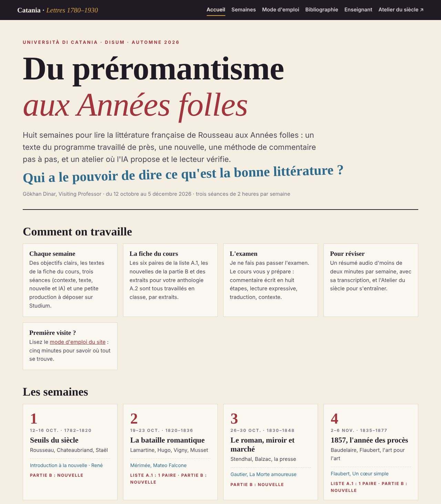
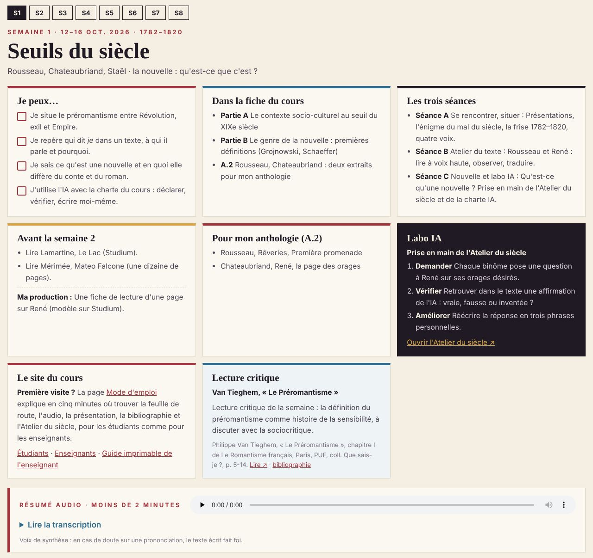
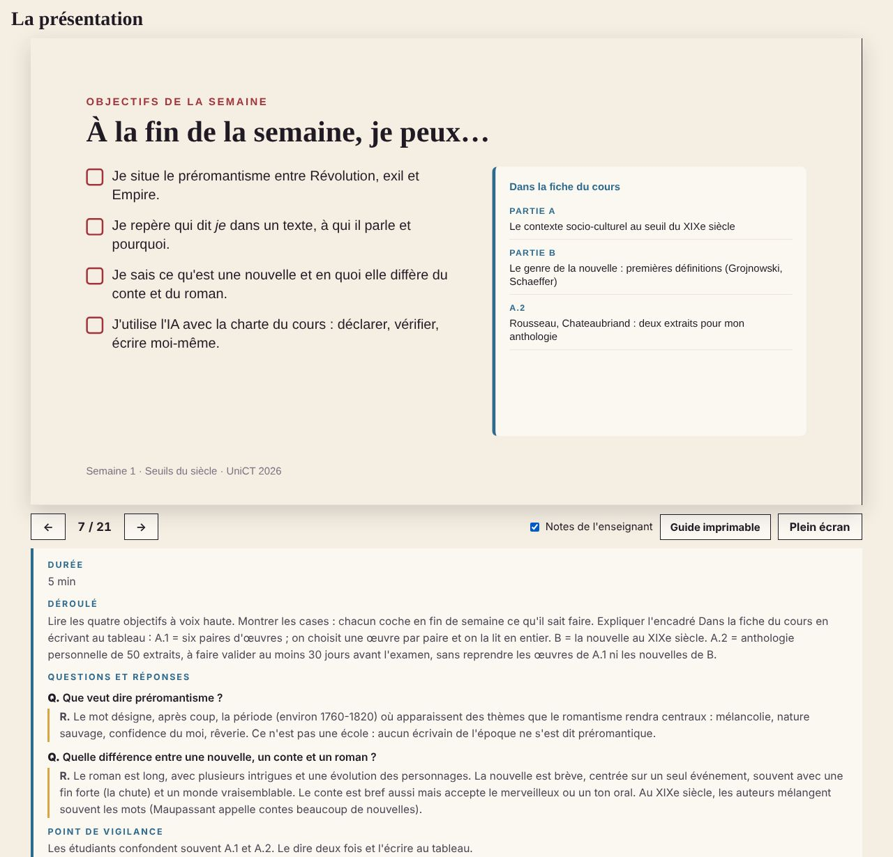
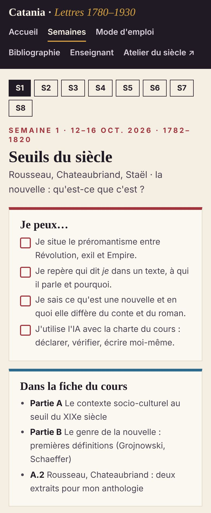
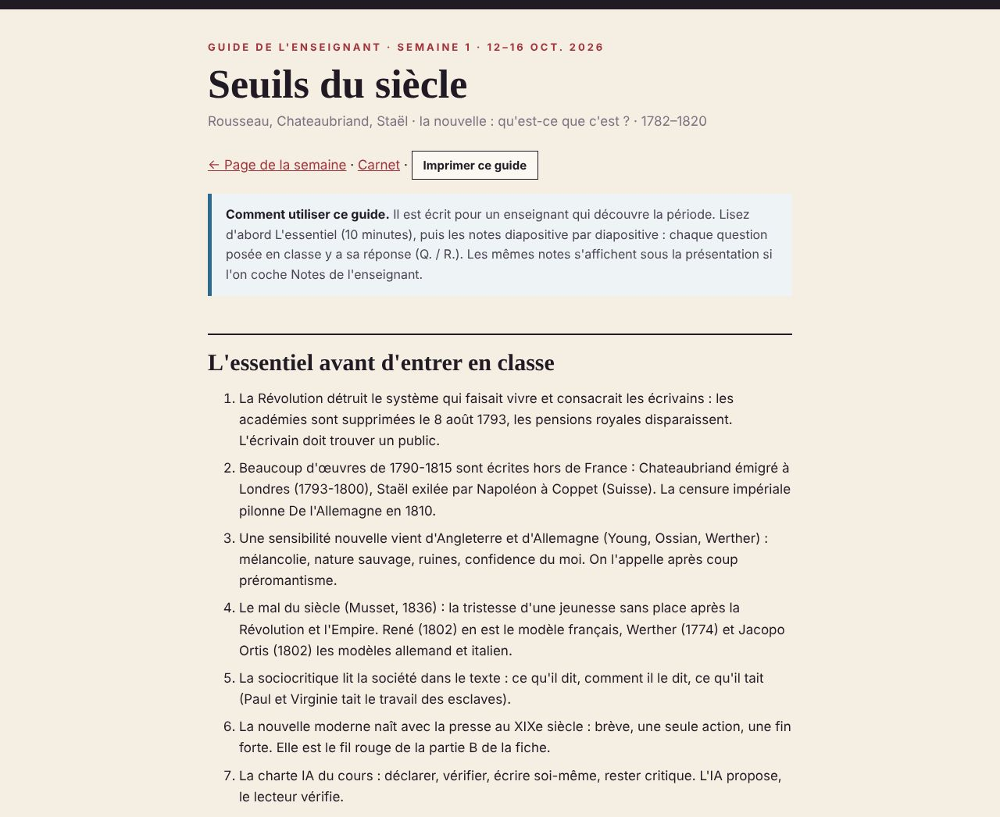

Mode d'emploi · Catania 2026
Mode d'emploi du site
Ce site accompagne le cours Letteratura francese dal Preromantismo a Les années folles (Università di Catania, automne 2026). Cette page explique où se trouve chaque chose et comment l'utiliser, d'abord pour les étudiants, puis pour les enseignants.
Pour les étudiants
En cinq minutes : le site est organisé par semaines. Chaque semaine a une page avec une feuille de route, un résumé audio et une présentation. Google Classroom est l'espace de la classe : on y trouve chaque semaine la présentation et le dossier de textes en PDF, on y dépose ses productions et on y lit les annonces.
1. La page d'accueil
La barre noire en haut de chaque page vous permet d'aller partout. Juste sous le titre de la page d'accueil, l'encadré Accès rapide donne deux QR codes : l'un pour rejoindre la classe Google Classroom (code rxdffgje), l'autre pour ouvrir le site sur votre téléphone. La page d'accueil présente aussi le cours, les huit semaines, la correspondance avec la fiche officielle du cours (listes A.1, B et A.2) et la charte IA.

1234567- Semaines ouvre la semaine 1 ; on passe ensuite d'une semaine à l'autre par les onglets S1 à S8.
- Mode d'emploi cette page.
- Bibliographie toutes les œuvres et lectures critiques, semaine par semaine.
- Enseignant le carnet de l'enseignant et les guides imprimables (utile aussi pour réviser).
- Classroom la classe Google Classroom : présentations et textes en PDF, dépôt des productions, annonces.
- Atelier du siècle l'outil d'IA du cours, projeté en classe ; chez soi, avec un compte claude.ai (facultatif).
- Carte de semaine dates, période, titre, nouvelle étudiée et textes de la fiche du cours : un clic ouvre la semaine.
2. La page d'une semaine : la feuille de route
En haut de la page, la feuille de route résume toute la semaine. Lisez-la avant la première séance : elle dit ce que vous saurez faire, quels textes du programme sont travaillés, ce qu'il faut lire et ce qu'il faut produire.

12345678- Onglets S1 à S8 pour changer de semaine.
- Titre et période le thème de la semaine et les dates de l'histoire littéraire couvertes.
- Je peux… les objectifs ; cochez-les mentalement à la fin de la semaine.
- Dans la fiche du cours les textes des listes A.1, B et A.2 travaillés cette semaine.
- Avant la semaine suivante ce qu'il faut lire, et Ma production : le petit travail à déposer sur Classroom.
- Labo IA les trois gestes de l'atelier IA (demander, vérifier, améliorer) et le lien vers l'Atelier du siècle.
- Lecture critique l'article ou le chapitre de critique discuté en classe, avec sa référence.
- Résumé audio moins de 2 minutes pour réviser ; la transcription est juste en dessous.
3. La présentation
Plus bas sur la page, la présentation est celle qui est projetée en classe. Vous pouvez la revoir à votre rythme : flèches du clavier, clic à droite ou à gauche de l'image, ou balayage du doigt sur téléphone. Le compteur indique la diapositive (par exemple 5 / 20) et l'adresse de la page change (#5) : vous pouvez envoyer ce lien à un camarade.
La case Notes de l'enseignant affiche, sous chaque diapositive, le déroulé de la séance, les questions posées et leurs réponses. Elle est utile pour réviser après la séance ; évitez de la lire avant, pour chercher par vous-mêmes.

12345678- Diapositive cliquer à droite pour avancer, à gauche pour reculer.
- Flèche gauche diapositive précédente.
- Compteur numéro de la diapositive et nombre total.
- Flèche droite diapositive suivante.
- Notes de l'enseignant affiche ou masque les notes (le site se souvient de votre choix).
- Guide imprimable toutes les notes de la semaine sur une page, à lire ou à imprimer.
- Plein écran pour projeter ou lire confortablement ; touche Échap pour sortir.
- Notes le déroulé, les questions (Q.) et leurs réponses (R.), les citations et les sources.
4. Sur téléphone
Le site fonctionne sur téléphone : la feuille de route passe en une colonne, la présentation se fait défiler du doigt, l'audio s'écoute dans les transports.

123- Menu les mêmes liens que sur ordinateur.
- Onglets S1 à S8.
- Feuille de route les cartes l'une sous l'autre.
5. Votre semaine type
- Avant la séance A : lire la feuille de route et écouter le résumé audio (5 minutes).
- Pendant les séances : suivre la présentation, prendre des notes, lire à voix haute quand on vous le demande.
- Après la séance C : revoir la présentation avec les notes de l'enseignant, écrire votre production, la déposer sur Classroom.
- Chaque semaine : choisir deux ou trois extraits pour votre anthologie A.2 (rubrique Pour mon anthologie).
- Pendant tout le semestre : lire en entier une œuvre de chaque paire de la liste A.1 (six œuvres au total).
6. L'Atelier du siècle et la charte IA
L'Atelier du siècle est une application sur claude.ai : vous y dialoguez avec des écrivains simulés (de 1802 à 1924) et vous pouvez faire relire un commentaire selon la grille du cours. En classe, il est projeté sur l'écran commun : personne n'a besoin d'un compte. Pour s'entraîner chez soi, il faut être connecté à un compte claude.ai (facultatif).
Quatre règles : déclarer (dire ce que l'IA a fait), vérifier (chaque date, citation ou attribution dans l'édition), écrire vous-même (aucun texte généré n'est rendu tel quel), rester critique (les écrivains simulés sont des hypothèses de lecture, pas des témoins). Le carnet de vérification IA garde la trace de vos vérifications : question posée, réponse de l'IA, vérification avec la page, verdict.
Pour les enseignants
Le site est conçu pour qu'un enseignant qui découvre la période puisse faire cours : chaque diapositive a une note avec la durée, le déroulé, l'essentiel à savoir, toutes les questions posées et leurs réponses, des citations vérifiées et les sources.
1. Préparer une semaine (environ 1 heure)

123- Imprimer imprime le guide (les menus disparaissent à l'impression).
- Comment utiliser ce guide rappel de la logique Q. / R.
- L'essentiel les connaissances indispensables pour la semaine, en sept points.
- Ouvrir le guide imprimable de la semaine (bouton Guide imprimable sous la présentation, ou page Enseignant) et lire L'essentiel avant d'entrer en classe.
- Lire le plan des trois séances avec les durées, puis les notes diapositive par diapositive : les lignes Q. sont les questions à poser, les lignes R. leurs réponses.
- Vérifier la rubrique Prononcer les noms propres et la rubrique Questions fréquentes des étudiants.
- Écouter le résumé audio de la semaine : c'est ce que les étudiants auront entendu.
- Préparer sur Classroom les textes intégraux signalés dans À anticiper (carnet).
2. Faire cours avec la présentation
- Projeter la page de la semaine, descendre jusqu'à la présentation et cliquer sur Plein écran.
- Avancer avec la flèche droite, la barre d'espace ou un clic à droite ; reculer avec la flèche gauche.
- Sur l'écran de l'enseignant (sans projection), cocher Notes de l'enseignant pour voir les notes sous la diapositive.
- Pour reprendre au bon endroit à la séance suivante, noter le numéro (par exemple #12) et ouvrir s1.html#12.
3. Les pages réservées à l'enseignant
Enseignant (carnet.html) : architecture du cours, rythme d'une semaine, calendrier, correspondance avec la fiche du cours, déroulé de chaque séance avec les durées, points à confirmer avec l'université.
Guides imprimables (prof-s1.html à prof-s8.html) : un document complet par semaine.
Bibliographie (biblio.html) : les références de chaque semaine et les lectures critiques. Les PDF des articles ne sont jamais déposés sur ce site public : seulement la référence, un lien et des citations courtes.
4. Les lectures critiques
Chaque semaine ajoute un ou deux textes critiques (Van Tieghem, Stalloni, Bainville…). Ils apparaissent sur une diapositive Lecture critique, sur une carte de la feuille de route, dans le carnet et dans la bibliographie. Les notes expliquent qui est l'auteur, sa position, ses idées principales et ce qu'il faut discuter. Le manuel de Stalloni contient quelques erreurs de date, signalées dans les notes : elles servent d'exercice de vérification. Les articles de Bainville sont des documents d'époque, à lire avec distance.
5. Si la technique ne suit pas
- Pas d'internet en salle : imprimer le guide de la semaine et ouvrir la page de la semaine avant la séance (elle reste affichée).
- Le labo IA se fait depuis le poste de l'enseignant, projeté : les binômes proposent les questions, l'enseignant les pose. Aucun compte étudiant n'est nécessaire.
- Son faible : la transcription du résumé audio est sous le lecteur ; la lire à voix haute.
Raccourcis et repères
Clavier et adresses
| Action | Comment |
|---|---|
| Diapositive suivante | flèche droite, barre d'espace, Page suivante, clic à droite de l'image |
| Diapositive précédente | flèche gauche, Page précédente, clic à gauche de l'image |
| Ouvrir directement la diapositive 12 | ajouter #12 à l'adresse (s1.html#12) |
| Plein écran | bouton Plein écran ; Échap pour sortir |
| Notes de l'enseignant | case à cocher sous la présentation |
| Imprimer les notes | page Guide imprimable, bouton Imprimer ce guide |
Questions fréquentes
Q. Le site remplace-t-il Google Classroom ?
R. Non. Google Classroom est l'espace de la classe : présentations et textes en PDF, dépôt des productions, annonces. Le site est le guide du cours. Pour rejoindre la classe : lien ou QR code sur la page d'accueil.
Q. Le site est-il mis à jour ?
R. Oui, chaque semaine : nouvelles lectures critiques, notes plus détaillées, corrections. Rechargez la page si un contenu semble ancien.
Q. Faut-il lire les notes de l'enseignant ?
R. Elles sont publiques et utiles pour réviser. Mais essayez d'abord de répondre aux questions vous-mêmes.
Q. Les citations du site sont-elles fiables ?
R. Elles sont vérifiées dans les éditions ; en cas de doute, l'édition imprimée fait foi. Signalez toute erreur à l'enseignant : c'est aussi un exercice.
Q. La voix du résumé audio prononce mal un nom : que faire ?
R. C'est une voix de synthèse. Le texte écrit (transcription) fait foi ; les prononciations conseillées sont dans le guide de l'enseignant de la semaine.
Q. L'Atelier du siècle ne s'ouvre pas.
R. Chez soi, il faut être connecté à un compte claude.ai dans le même navigateur. En classe, on travaille sur l'écran commun.
Q. Qui contacter ?
R. Gökhan Dinar, Visiting Professor, par Google Classroom (commentaires privés ou annonces) ou à la fin des séances.